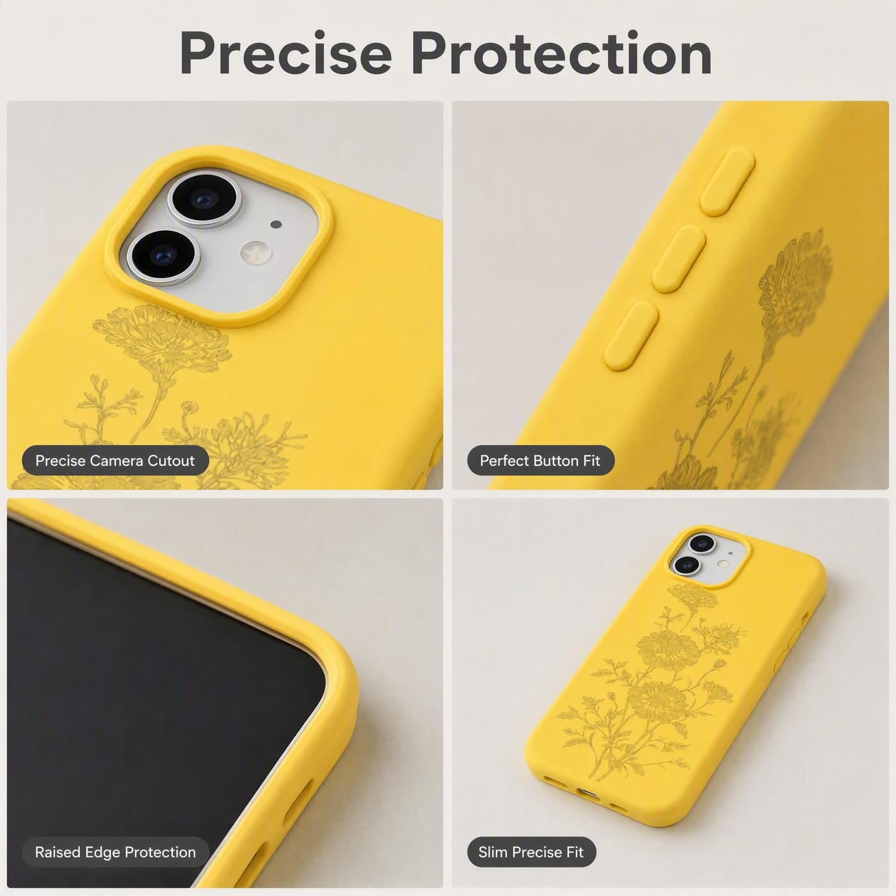
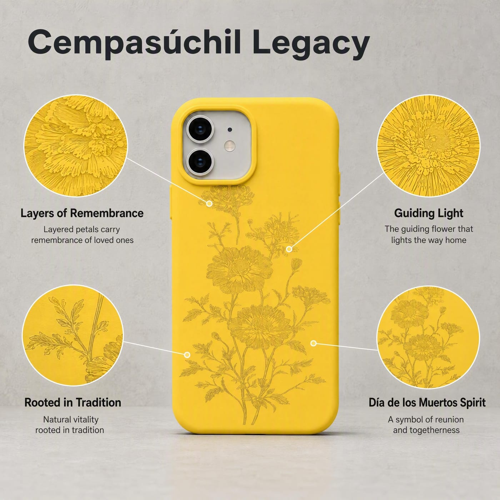
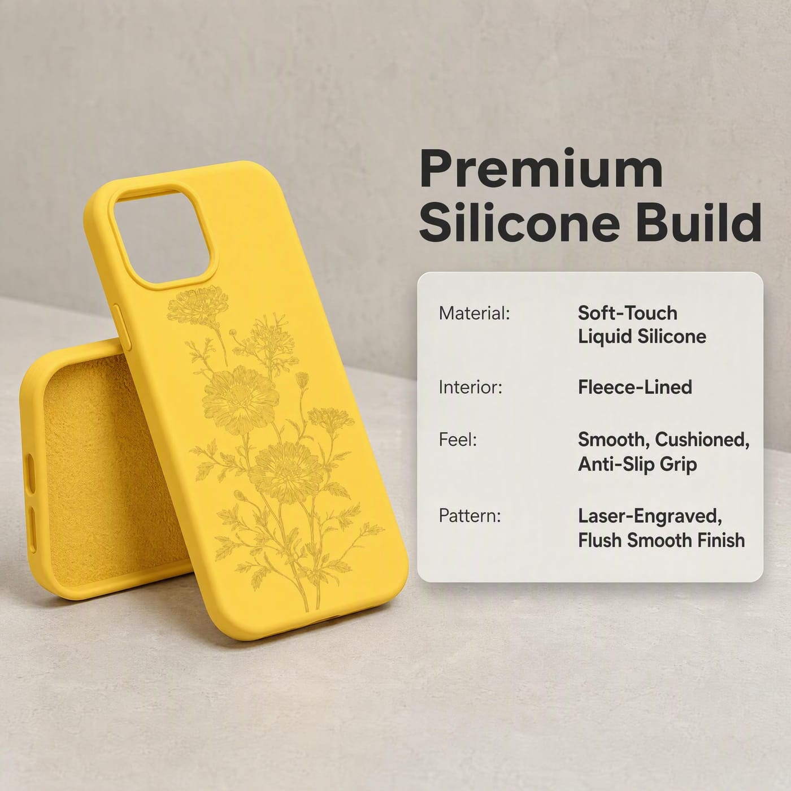
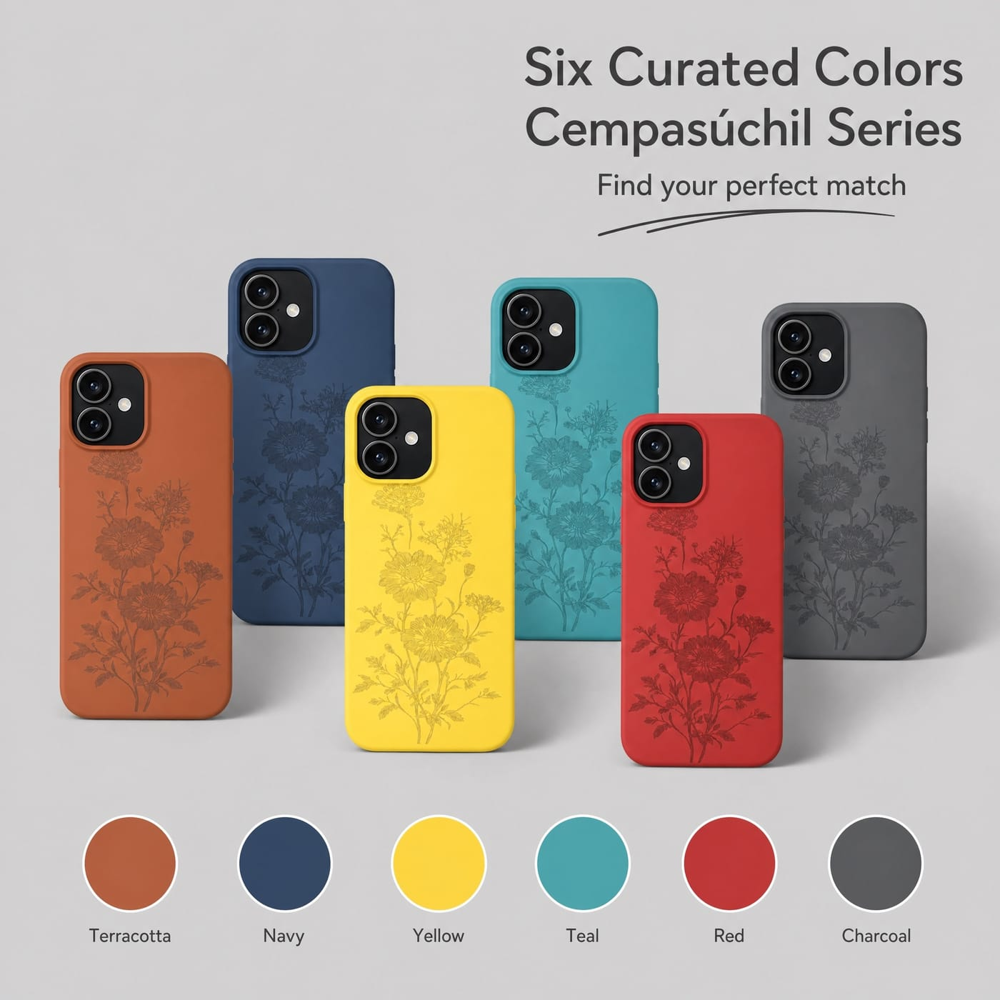

Funda de Silicona Cempasúchil
Flores de cempasúchil superpuestas con tallos que se extienden, grabadas con láser sobre una funda de silicona suave al tacto.
El Diseño
El cempasúchil —la flor del Día de los Muertos— se coloca en caminos y altares por todo México cada año, con la creencia de que guía con su color y aroma a los espíritus de los difuntos de vuelta a casa. Esta funda se centra por completo en la flor misma: flores superpuestas, un fino trazo de pétalos y tallos que se extienden, en lugar de un patrón floral genérico.
El diseño está grabado con láser directamente en la funda en su propio color en lugar de impreso, así que se mantiene como una fina textura tonal que no se desvanece, se astilla ni se despega, y permanece completamente lisa al tacto. Un suave forro de felpa protege el panel trasero y la cámara del teléfono, y la silicona mate y suave al tacto da un agarre acolchado y antideslizante.
Una opción natural para la temporada del Día de los Muertos y para ocasiones de regalo centradas en el recuerdo y el reencuentro — disponible en seis colores y cortada para toda la gama de iPhone 11 a 18.
Artesanía y Estructura
Grabado con láser, no impreso.
Grabado Láser del Mismo Color
El patrón está grabado con láser directamente en la funda en su propio color — un contraste tonal que se ve, pero completamente liso y a ras al tacto, sin capa de tinta que se desvanezca, se raye o se despegue.

Forro de Felpa, Cobertura Total
Un suave forro de felpa por dentro protege el panel trasero y los lentes de la cámara del teléfono contra rayaduras, con un borde elevado y cortes precisos para cada modelo.
Características Clave
Tres detalles que dan vida al diseño.

Cempasúchil, la Flor que Guía a los Espíritus a Casa
La flor del Día de los Muertos, colocada en caminos y altares para guiar a los espíritus de los difuntos de vuelta a casa — una de las flores más específicas y llenas de significado de México.

Silicona Líquida Suave al Tacto
Un agarre acolchado, mate y antideslizante por fuera, con un interior forrado en felpa — cómoda de sostener y suave con el teléfono.

Seis Colores
Terracota, Azul Marino, Amarillo, Verde Azulado, Rojo y Carbón — el mismo grabado en cada color.
¿Te interesa este diseño, o algo parecido?
Cuéntanos los modelos, cantidades y plazos que necesitas — confirmaremos el precio y pondremos una muestra en marcha.